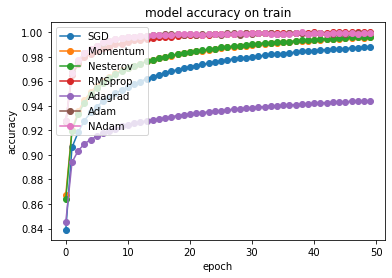
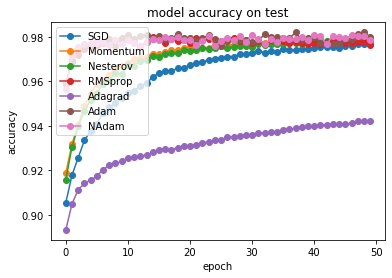
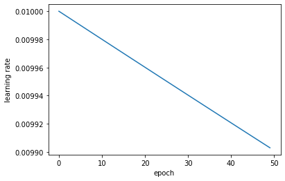
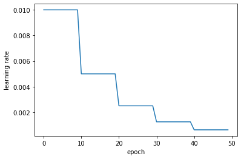
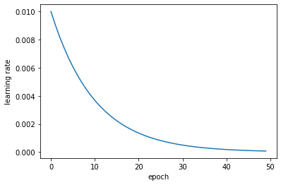
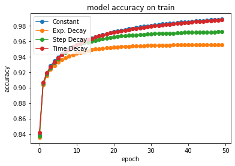
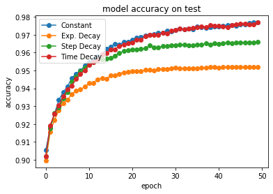
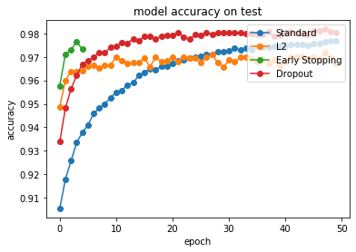

Some useful libraries…
from tensorflow import keras
import numpy as np
import matplotlib.pyplot as plt
Import the MNIST dataset we already go to know in the last exercise:
(x_train, y_train), (x_test, y_test) = keras.datasets.mnist.load_data()
x_train, x_test = x_train / 255.0, x_test / 255.0
Machine Learning Optimizers¶
Gradient descent is one of the most popular algorithms to perform optimization and is also one of the most common ways to optimize neural networks. Nevertheless there exist even more refined variants, which we will investigate in this exercise. Six common optimizers are:
SGD Stochastic gradient descent optimizes the parameters of the network by randomly choosing a mini-batch from the entire dataset and calculating the gradient of the loss function \(J(\theta)\) with respect to these data points. The learning rate \(\eta\) specifies how large of a step we take in the direction of the gradient.
Momentum The momentum optimizer refines the optimization by incorporating previous gradients and adding them to a momentum vector \(\mathbf{m}\). In order to prevent the momentum from growing infinitely, one adds a friction parameter \(\beta\) which has to be chosen appropriately.
NAG A small modification to momentum optimization is Nesterov accelerated gradient (NAG), which evaluates the gradient not at the current set of parameters \(\theta\), but slightly ahead, pointing more in the direction of the optimum.
AdaGrad The AdaGrad algorithm focuses the gradient more towards to the optimum by scaling the weight vector along the steepest dimensions. The first step is to accumulate the square of the gradients and then to use this to scale the gradient vector. In order to prevent division by zero we add a small parameter \(\epsilon\).
RMSprop RMSProp is a slight modification of AdaGrad to prevent the training from slowing down too fast. This is done by accumulating only the gradients from the most recent iterations.
Adam The adaptive moment estimation (Adam) combines the ideas of momentum and RMSProp optimization and is one of the most common choices today. \(T\) represents the epoch iteration number.
In order to use the optimizers already implemented in the keras framework of tensorflow, we use a function which generates and compiles a model for a given optimizer.
def build_compile(optimizer_name='SGD'):
# Use the same network topology as last week
model = keras.Sequential([ keras.layers.Flatten(input_shape=(28, 28)),
keras.layers.Dense(128, activation='relu'),
keras.layers.Dense(10, activation='softmax')])
# compile the model with a cross-entropy loss and specify the given optimizer
model.compile(optimizer=optimizer_name, loss=keras.losses.SparseCategoricalCrossentropy(),metrics=['accuracy'])
return model
Now we generate an array of the different optimizers to iterate over in a for loop
optimizer_names = ['SGD','Momentum','Nesterov', 'RMSprop','Adagrad','Adam','NAdam']
optimizer_list = ['SGD',keras.optimizers.SGD(learning_rate=0.01, momentum=0.5, nesterov=False),keras.optimizers.SGD(learning_rate=0.01, momentum=0.5, nesterov=True), 'RMSprop','Adagrad','Adam','NAdam']
# Two arrays for training and validation performance
hist_acc = []
hist_val_acc = []
# Iterate over optimizers and train the network, using x_test and y_test as a validation set in each epoch
for item,name in zip(optimizer_list, optimizer_names):
print("-----------------------------")
print("Doing %s optimizer" %str(name))
print("-----------------------------")
# Get the model from our function above
model = build_compile(item)
# Train the model
history = model.fit(x_train, y_train, epochs=50, batch_size=32, validation_data=(x_test, y_test))
# Store the performance
hist_acc.append(history.history['acc'])
hist_val_acc.append(history.history['val_acc'])
print("-----------------------------")
-----------------------------
Doing SGD optimizer
-----------------------------
Train on 60000 samples, validate on 10000 samples
Epoch 1/50
60000/60000 [==============================] - 2s 32us/sample - loss: 0.6429 - acc: 0.8389 - val_loss: 0.3526 - val_acc: 0.9054
Epoch 50/50
60000/60000 [==============================] - 2s 26us/sample - loss: 0.0472 - acc: 0.9881 - val_loss: 0.0780 - val_acc: 0.9768
-----------------------------
-----------------------------
Doing Momentum optimizer
-----------------------------
Train on 60000 samples, validate on 10000 samples
Epoch 1/50
60000/60000 [==============================] - 2s 30us/sample - loss: 0.5009 - acc: 0.8676 - val_loss: 0.2948 - val_acc: 0.9187
Epoch 50/50
60000/60000 [==============================] - 2s 31us/sample - loss: 0.0220 - acc: 0.9960 - val_loss: 0.0685 - val_acc: 0.9787
-----------------------------
-----------------------------
Doing Nesterov optimizer
-----------------------------
Train on 60000 samples, validate on 10000 samples
Epoch 1/50
60000/60000 [==============================] - 2s 30us/sample - loss: 0.5109 - acc: 0.8639 - val_loss: 0.3035 - val_acc: 0.9158
Epoch 50/50
60000/60000 [==============================] - 2s 27us/sample - loss: 0.0213 - acc: 0.9963 - val_loss: 0.0685 - val_acc: 0.9779
-----------------------------
-----------------------------
Doing RMSprop optimizer
-----------------------------
Train on 60000 samples, validate on 10000 samples
Epoch 1/50
60000/60000 [==============================] - 2s 37us/sample - loss: 0.2563 - acc: 0.9273 - val_loss: 0.1384 - val_acc: 0.9587
Epoch 50/50
60000/60000 [==============================] - 2s 34us/sample - loss: 4.0403e-04 - acc: 0.9998 - val_loss: 0.2369 - val_acc: 0.9764
-----------------------------
-----------------------------
Doing Adagrad optimizer
-----------------------------
Train on 60000 samples, validate on 10000 samples
Epoch 1/50
60000/60000 [==============================] - 2s 34us/sample - loss: 0.6485 - acc: 0.8455 - val_loss: 0.4352 - val_acc: 0.8932
Epoch 50/50
60000/60000 [==============================] - 2s 32us/sample - loss: 0.2028 - acc: 0.9443 - val_loss: 0.2022 - val_acc: 0.9420
-----------------------------
-----------------------------
Doing Adam optimizer
-----------------------------
Train on 60000 samples, validate on 10000 samples
Epoch 1/50
60000/60000 [==============================] - 2s 30us/sample - loss: 0.2568 - acc: 0.9266 - val_loss: 0.1312 - val_acc: 0.9590
Epoch 50/50
60000/60000 [==============================] - 2s 30us/sample - loss: 0.0027 - acc: 0.9990 - val_loss: 0.1513 - val_acc: 0.9800
-----------------------------
-----------------------------
Doing NAdam optimizer
-----------------------------
Train on 60000 samples, validate on 10000 samples
Epoch 1/50
60000/60000 [==============================] - 3s 45us/sample - loss: 0.2584 - acc: 0.9272 - val_loss: 0.1445 - val_acc: 0.9564
Epoch 50/50
60000/60000 [==============================] - 2s 40us/sample - loss: 0.0027 - acc: 0.9992 - val_loss: 0.1757 - val_acc: 0.9786
-----------------------------
# summarize history for accuracy on training set
for i in range(len(optimizer_list)):
plt.plot(hist_acc[i],'-o',label=str(optimizer_names[i]))
plt.title('model accuracy on train')
plt.ylabel('accuracy')
plt.xlabel('epoch')
plt.legend(loc='upper left')
plt.show()

# summarize history for accuracy on test set
for i in range(len(optimizer_list)):
plt.plot(hist_val_acc[i],'-o', label=str(optimizer_names[i]))
plt.title('model accuracy on test')
plt.ylabel('accuracy')
plt.xlabel('epoch')
plt.legend(loc='upper left')
plt.show()

As already discussed in class, the Adam optimizer shows the best performance as it combines a momentum gradient approach with an adaptive learning rate. NAdam is further improvement, using the Nesterov update instead of vanilla momentum optimization.
Learning Rate Scheduling¶
When training a neural network, we can tune the performance by optimizing a large set of hyperparameters. The most important parameter among them is the learning rate. A learning rate that is set too small will slow down the training, as we update the weights of the network in tiny steps. On the other hand, if the learning rate is set too high, the training can diverge. Usually we want to start with a large learning rate to make fast progress and then slow down the training close to the optimum. This can be achieved by using learning rate schedules, which we will investigate in this exercise.
Time-based decay:
where \(\eta_0\) is the initial learning rate, \(t\) the iteration number (epoch) and \(n_{\text{epochs}}\) the total number of epochs. Specifying the ratio \(\eta_0/n_{\text{epochs}}\) decreases the learning rate from the previous epoch by the set amount.
Step decay:
where \(\eta_0\) is the initial learning rate, \(t\) the iteration number (epoch) and \(\alpha\) the drop rate specifying the amount that the learning rate is changed every \(n_{\text{drop}}\) epochs.
Exponential decay:
where \(\eta_0\) is the initial learning rate, \(t\) the epoch number and \(k\) a hyperparameter.
nepochs = 50
Time based decay¶
# Implement formula (15)
initial_learning_rate = 0.01
epochs = nepochs
decay = initial_learning_rate / epochs
def lr_time_based_decay(epoch, lr):
return initial_learning_rate * 1 / (1 + decay * epoch)
# Plot the learning rate as a function of the number of epochs
plt.plot(lr_time_based_decay(np.arange(0,nepochs),0.01))
plt.ylabel('learning rate')
plt.xlabel('epoch')
plt.show()

# Train the network with the learning rate schedule
model = build_compile()
history_time_based_decay = model.fit(
x_train,
y_train,
epochs=nepochs,
batch_size=32,
callbacks=[keras.callbacks.LearningRateScheduler(lr_time_based_decay, verbose=1)], validation_data=(x_test, y_test))
Train on 60000 samples, validate on 10000 samples
Epoch 00001: LearningRateScheduler reducing learning rate to 0.01.
Epoch 1/50
60000/60000 [==============================] - 2s 34us/sample - loss: 0.6335 - acc: 0.8417 - val_loss: 0.3565 - val_acc: 0.9020
Epoch 00050: LearningRateScheduler reducing learning rate to 0.009902951079421667.
Epoch 50/50
60000/60000 [==============================] - 2s 28us/sample - loss: 0.0487 - acc: 0.9876 - val_loss: 0.0785 - val_acc: 0.9768
Step decay¶
# Implement formula (16)
initial_learning_rate = 0.01
def lr_step_decay(epoch, lr):
drop_rate = 0.5
epochs_drop = 10.0
return initial_learning_rate * np.power(drop_rate, np.floor(epoch/epochs_drop))
# Plot the learning rate as a function of the number of epochs
plt.plot(lr_step_decay(np.arange(0,nepochs),0.01))
plt.ylabel('learning rate')
plt.xlabel('epoch')
plt.show()

# Train the network with the learning rate schedule
model = build_compile()
history_step_decay = model.fit(
x_train,
y_train,
epochs=nepochs,
batch_size=32,
callbacks=[keras.callbacks.LearningRateScheduler(lr_step_decay, verbose=1)], validation_data=(x_test, y_test))
Train on 60000 samples, validate on 10000 samples
Epoch 00001: LearningRateScheduler reducing learning rate to 0.01.
Epoch 1/50
60000/60000 [==============================] - 2s 31us/sample - loss: 0.6441 - acc: 0.8373 - val_loss: 0.3594 - val_acc: 0.9019
Epoch 00050: LearningRateScheduler reducing learning rate to 0.000625.
Epoch 50/50
60000/60000 [==============================] - 2s 26us/sample - loss: 0.1040 - acc: 0.9718 - val_loss: 0.1165 - val_acc: 0.9659
Exponential decay¶
# Implement formula (17)
initial_learning_rate = 0.01
def lr_exp_decay(epoch, lr):
k = 0.1
return initial_learning_rate * np.exp(-k*epoch)
# Plot the learning rate as a function of the number of epochs
plt.plot(lr_exp_decay(np.arange(0,nepochs),0.01))
plt.ylabel('learning rate')
plt.xlabel('epoch')
plt.show()

# Train the network with the learning rate schedule
model = build_compile()
history_exp_decay = model.fit(
x_train,
y_train,
epochs=nepochs,
batch_size=32,
callbacks=[keras.callbacks.LearningRateScheduler(lr_exp_decay, verbose=1)], validation_data=(x_test, y_test))
Train on 60000 samples, validate on 10000 samples
Epoch 00001: LearningRateScheduler reducing learning rate to 0.01.
Epoch 1/50
60000/60000 [==============================] - 2s 29us/sample - loss: 0.6502 - acc: 0.8359 - val_loss: 0.3612 - val_acc: 0.8996
Epoch 00050: LearningRateScheduler reducing learning rate to 7.446583070924338e-05.
Epoch 50/50
60000/60000 [==============================] - 2s 28us/sample - loss: 0.1607 - acc: 0.9554 - val_loss: 0.1678 - val_acc: 0.9520
# summarize history for accuracy
plt.plot(hist_acc[0],'-o',label='Constant')
plt.plot(history_exp_decay.history['acc'],'-o', label="Exp. Decay")
plt.plot(history_step_decay.history['acc'],'-o', label="Step Decay")
plt.plot(history_time_based_decay.history['acc'],'-o', label="Time Decay")
plt.title('model accuracy on train')
plt.ylabel('accuracy')
plt.xlabel('epoch')
plt.legend(loc='upper left')
plt.show()

# summarize history for accuracy
plt.plot(hist_val_acc[0],'-o',label='Constant')
plt.plot(history_exp_decay.history['val_acc'],'-o', label="Exp. Decay")
plt.plot(history_step_decay.history['val_acc'],'-o', label="Step Decay")
plt.plot(history_time_based_decay.history['val_acc'],'-o', label="Time Decay")
plt.title('model accuracy on test')
plt.ylabel('accuracy')
plt.xlabel('epoch')
plt.legend(loc='upper left')
plt.show()

Regularizing Neural Networks¶
We discussed the bias-variance trade-off, which describes the problem of creating models which generalize well to unseen data. Neural networks are extremely susceptible to overfitting, as the vast number of parameters allows to perfectly represent the training data. Two common ways to address overfitting are either creating more data or using a regularization of the model. You already got to know regularization with regards to linear regression, which we will now extend to neural networks. We start with a norm regularization of the weights.
L2 Regularization¶
This means adding the squared norm of all weights to the loss function
where \(b\) is the regularization parameter and \(L\) the number of layers.
# Build the model with an L2 regularization added to all weights
model_l2 = keras.Sequential([keras.layers.Flatten(input_shape=(28, 28)),
keras.layers.Dense(128, activation='relu',kernel_regularizer=keras.regularizers.l2(0.001)),
keras.layers.Dense(10, activation='softmax',kernel_regularizer=keras.regularizers.l2(0.001))])
# Compile the model and optimize with adam
model_l2.compile(optimizer='Adam', loss=keras.losses.SparseCategoricalCrossentropy(),metrics=['accuracy'])
# Fit the model to the data while providing a validation set for each epoch
history_l2 = model_l2.fit(x_train, y_train, epochs=50, batch_size=32, validation_data=(x_test, y_test))
Train on 60000 samples, validate on 10000 samples
Epoch 1/50
60000/60000 [==============================] - 2s 37us/sample - loss: 0.4237 - acc: 0.9193 - val_loss: 0.3000 - val_acc: 0.9487
Epoch 50/50
60000/60000 [==============================] - 2s 32us/sample - loss: 0.2427 - acc: 0.9697 - val_loss: 0.2448 - val_acc: 0.9672
Early stopping¶
Another possibility is to monitor the performance on the validation set and interrupt the training once it starts to drop. This procedure is called early stopping.
# Build the model with early stopping
model_es = keras.Sequential([keras.layers.Flatten(input_shape=(28, 28)),
keras.layers.Dense(128, activation='relu'),
keras.layers.Dense(10, activation='softmax')])
# Compile the model and optimize with adam
es = keras.callbacks.EarlyStopping(monitor='val_loss', mode='min', verbose=1)
model_es.compile(optimizer='Adam', loss=keras.losses.SparseCategoricalCrossentropy(),metrics=['accuracy'])
# Fit the model to the data while providing a validation set for each epoch
history_es = model_es.fit(x_train, y_train, epochs=50, batch_size=32, validation_data=(x_test, y_test), callbacks=[es])
Train on 60000 samples, validate on 10000 samples
Epoch 1/50
60000/60000 [==============================] - 2s 34us/sample - loss: 0.2561 - acc: 0.9272 - val_loss: 0.1408 - val_acc: 0.9577
Epoch 2/50
60000/60000 [==============================] - 2s 31us/sample - loss: 0.1152 - acc: 0.9661 - val_loss: 0.0975 - val_acc: 0.9712
Epoch 3/50
60000/60000 [==============================] - 2s 29us/sample - loss: 0.0772 - acc: 0.9774 - val_loss: 0.0863 - val_acc: 0.9730
Epoch 4/50
60000/60000 [==============================] - 2s 30us/sample - loss: 0.0588 - acc: 0.9814 - val_loss: 0.0733 - val_acc: 0.9765
Epoch 5/50
60000/60000 [==============================] - 2s 29us/sample - loss: 0.0454 - acc: 0.9863 - val_loss: 0.0876 - val_acc: 0.9732
Epoch 00005: early stopping
Dropout¶
An additional very common technique to regularize the network is dropout. Using dropout means to randomly remove neurons with a probability \(p\) during each training step.
# Build the model with dropout
model_dropout = keras.Sequential([keras.layers.Flatten(input_shape=(28, 28)),
keras.layers.Dense(128, activation='relu'),
keras.layers.Dropout(.2),
keras.layers.Dense(10, activation='softmax'),
keras.layers.Dropout(.2)])
# Compile the model and optimize with adam
model_dropout.compile(optimizer='Adam', loss=keras.losses.SparseCategoricalCrossentropy(),metrics=['accuracy'])
# Fit the model to the data while providing a validation set for each epoch
history_dropout = model_dropout.fit(x_train, y_train, epochs=50, batch_size=32, validation_data=(x_test, y_test))
Train on 60000 samples, validate on 10000 samples
Epoch 1/50
60000/60000 [==============================] - 2s 38us/sample - loss: 1.8167 - acc: 0.7189 - val_loss: 0.4290 - val_acc: 0.9338
Epoch 50/50
60000/60000 [==============================] - 2s 37us/sample - loss: 0.5712 - acc: 0.7990 - val_loss: 0.2042 - val_acc: 0.9805
# summarize history for accuracy
plt.plot(hist_val_acc[0],'-o', label='Standard')
plt.plot(history_l2.history['val_acc'],'-o', label="L2")
plt.plot(history_es.history['val_acc'],'-o', label="Early Stopping")
plt.plot(history_dropout.history['val_acc'],'-o', label="Dropout")
plt.title('model accuracy on test')
plt.ylabel('accuracy')
plt.xlabel('epoch')
plt.legend(loc='upper right')
plt.show()
